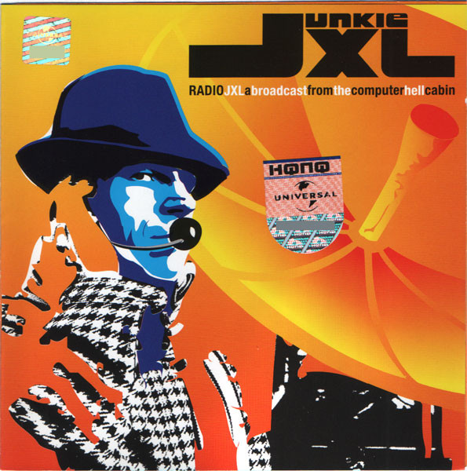

CD
Radio JXL: A Broadcast From The Computer Hell Cabin
Junkie XL
Media: — · Sleeve: —
—
Personal
Discogs SuggestedCA$14.89
Discogs MedianCA$14.89
Discogs HighCA$14.89
- Physical Copy ID
- BB-CD-3397
- Year
- 2003
- Label
- Roadrunner Records
- Catalog #
- 0168618380294
- Country
- RURussia
- Genre / Style
- Electronic · Progressive House, House, Downtempo, Progressive Trance